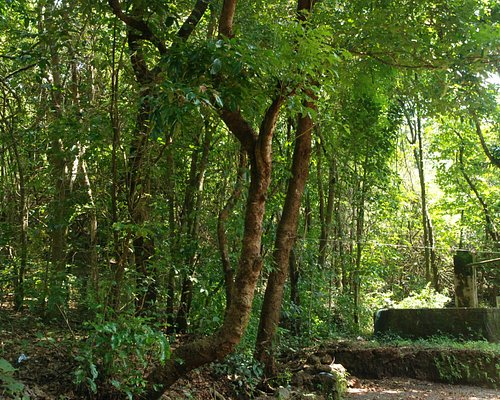

Bekal fort

Ranipuram

kareem's forest park


Kasaragod is one of the 14 districts in the southern Indian state of Kerala. Its northern border Thalappady is located just 10 km south to Ullal, which is the southernmost portion of the major port city Mangalore, on the southwestern Malabar coast of India.
Kasaragod town is located on the estuary where the Chandragiri River, which is also the longest river in the district, empties into Arabian Sea. Kasaragod is home to several forts which include Arikady fort, Bekal Fort, Chandragiri Fort, and Hosdurg Fort (Puthiyakotta Fort). Bekal Fort is also the largest fort in Kerala. The historic hill of Ezhimala is located on the southern portion of Kavvayi Backwaters of Nileshwaram. Talakaveri, which is home to Talakaveri Wildlife Sanctuary where the 805 km long Kaveri River originates, is located closer to Ranipuram in Kerala-Karnataka border. Robert Caldwell describes the extent of Malayalam in the late 19th century as extending from Chandragiri fort and Chandragiri river in the north to Neyyar river beyond Thiruvanantapuram in the south.